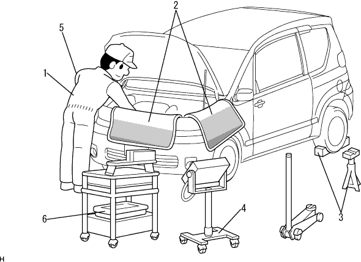
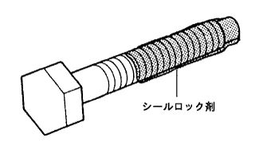
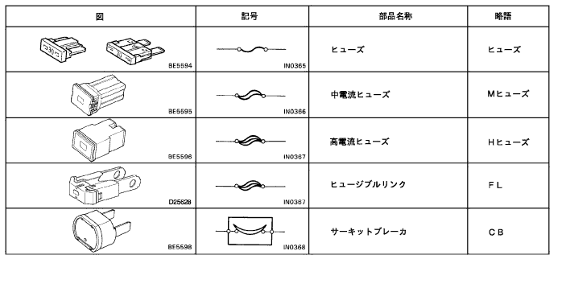
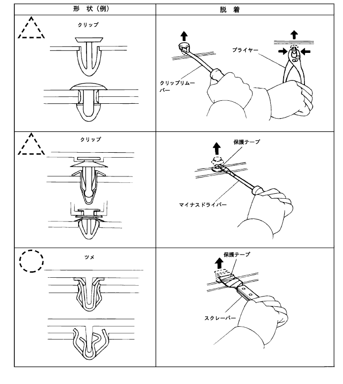
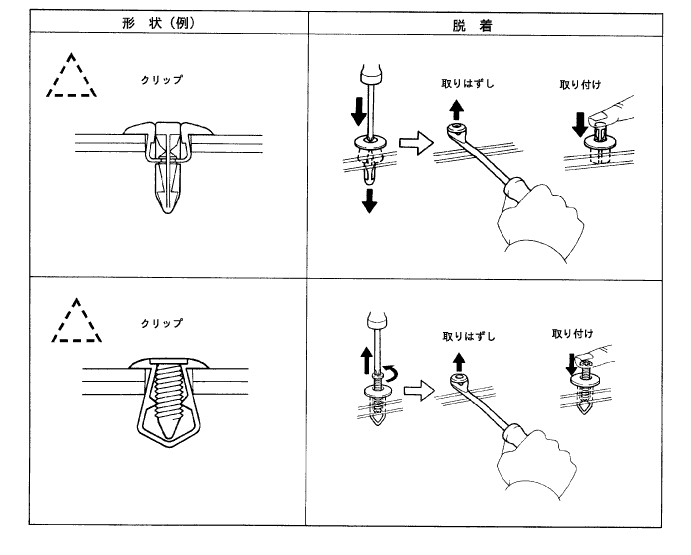
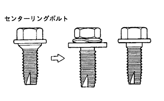
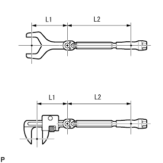

作業の心得

| 1 | 身だしなみ |
|
| 2 | 車両の保護 |
|
| 3 | 安全作業 |
|
| 4 | 工具および計器などの準備 |
|
| 5 | 脱着·分解·組み付け作業 |
|
| 6 | 取りはずし部品 |
|
|  |
プレコートボルト
プレコートボルトとは、ねじ部にシールロック剤が塗布されているボルトである。
プレコートボルトを再度締め付けたり、緩めたり、または動かす場合は、指定の接着剤を使用して、プレコートする。
- ■ 注 意 ■
- トルクチェックは、締め付けトルク許容範囲の下限の値で行う。
プレコート部品を再利用する場合は、ボルトおよびねじ穴の古い接着剤を取り除き、ホワイトガソリンなどで脱脂、圧縮エアで乾燥、それからボルトのねじ部に指定のシールロック剤を塗布し、規定トルクで締め付ける。
塗布するシールロック剤によっては、硬化するまで規定時間放置しなければならない場合がある。
ガスケット
ガスケットは必要に応じ、シール剤を使用し漏れを防ぐ。
ボルト、ナット、およびスクリュー
ボルト、ナット、スクリューは締め付けトルクを確認し、常にトルクレンチを使用する。
 |
ヒューズ交換
ヒューズを交換する場合は、同容量のヒューズを使用する。やむなく異なる容量のヒューズを使用する場合は、規定アンペアより低い容量のヒューズを使用する。

クリップ
ボデー部品の一般的なクリップ脱着は図に示す。
- □ 参 考 □
- 作業中にクリップが破損した場合は、必ず新品のクリップと交換する。
- イラスト中の▲印はクリップ、○印はツメ箇所を示している。


|  |
建付調整時の注意
ボンネット、ドア、バックドアなどのヒンジ部にセンターリングボルトが使用されている場合は、補給品のボルトに交換してから建付調整を行なう。
車両のジャッキアップ、ジャッキダウンおよび支持
車両をジャッキアップ、ジャッキダウン、支持する場合は注意事項を必ず守る。（ジャッキ、リジッドラックおよびリフトの支持位置の項
 参照)
参照)
バキュームホース取りはずしおよび取り付け
バキュームホースを抜く場合は、ホースの中心ではなく、端を持って抜く。
バキュームホースを抜く場合は、タグを使用してどこに接続するかわかるようにする。
バキュームゲージを使用する場合、コネクターが大きすぎる場合は、ホースを接続しない。少し小さいアダプタを調整用として使用する。ホースが一旦伸びてしまうと、エア漏れを生じる可能性がある。
 |
 |
|  |
トルクレンチに延長工具使用時の締め付け
トルクレンチにSSTまたは工具を組み合わせ、全長を延長して締め付ける場合、トルクレンチの読みが規定締め付けトルクの値になるまで締め付けると、実際の締め付けトルクは過大となる。
本文には、規定締め付けトルクのみを記載している。SST、延長工具を使用する場合は、計算式によりトルクレンチの読みを求める。
計算式 T’=T×L2/(L1+L2)
T’ トルクレンチの読み[N·m{kgf·cm} ] T 規定締め付けトルク[N·m{kgf·cm} ] L1 SSTまたは工具の長さ[cm] L2 トルクレンチの長さ[cm]